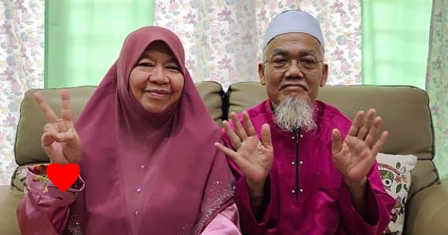

| HOME | ABOUT ME | BIODATA | EDUCATION | FAMILY | BESTIES | INTEREST | MEMORIES | CONTACT |
Hi! Introducing my most beloved family hehe ‚ù§Ô∏è Alhamdulillah, I am very blessed to be born in this lovely family, thanks to Allah for giving me kind and supportive parents, cute and good brothers, a very understanding and lovely sisters-in-law. Many people have been asking me how do I live normally with all my 6 brothers AHAHAHAHA. Weird questions but that is so true HAHAHAHA. I don't know, I got used to it since I was born so I didn't seems to see that issue HAHAHAHA. But to be honest, I'm all good with my brothers but with guy friends, it is honestly so awkward because I don't befriend with guys that much. I'm only close to my brothers and still awkward with guys hahaha. Okay, my beloved family check!! üíï
| Picture | Name | Age | Relationship | Profession |
|  | Azero bin Mohammed Anuar | 65 | Father | Pensioner |
| Jamaliah binti Ahmad | 64 | Mother | Pensioner | |
| Mohd Afiq bin Azero | 36 | Eldest Brother | Lecturer in accountancy | |
| Nur Arina binti Rai | 36 | Sister-in-law | Financial Executive | |
| Auni Sofiyyah binti Mohd Afiq | 8 | Niece | Student | |
| Muhammad Hamzah bin Mohd Afiq | 5 | Nephew | Student | |
| Muhammad Yusuf bin Mohd Afiq | 2 | Nephew | Baby | |
| Alya Qhadijah binti Mohd Afiq | 6 months | Niece | Baby | |
|
Mohammad Luqman Haqim bin Azero | 34 | 2nd Brother | Storekeeper in Tesco |
| Muhamad Shauqi Amar bin Azero | 32 | 3rd Brother | Assistant Manager | |
| Ainul Nadia binti Suhaimee | 30 | Sister-in-law | Research Executive | |
| Aisyah Humaira binti Muhamad Shauqi Amar | 6 | Niece | Student | |
| Uwais Umar bin Muhamad Shauqi Amar | 4 | Nephew | Baby | |
| Khayra Zulaikha binti Muhamad Shauqi Amar | 5 months | Niece | Baby | |
|
Muhammad Siddiq bin Azero | 29 | 4th Brother | Master Student in Misr |
| Norliyana Azizah binti Junaidi | 26 | Sister-in-law | Housewife | |
| Sayyidah Nur Nafisah binti Muhammad Siddiq | 4 | Niece | Baby | |
| Muhammad Rofiq Khayr bin Azero | 27 | 5th Brother | Seafarer | |
| Nurul Aishah binti Ramli | 27 | Sister-in-law | Clerk | |
| Muhammad Haziq Iqbal bin Azero | 25 | 6th Brother | Teacher | |
| Wan Nur Hanis binti Wan Ahmad Dasuki | 27 | Sister-in-law | Teacher | |
| Muhammad Tolhah Ubaidillah bin Muhammad Haziq Iqbal | 3 | Nephew | Baby | |
| Siti Fatimah Zahra binti Azero | 21 | Me | Degree Student at UiTM |
Family video call for Eidulfitri.
My siblings had their video call first because they couldn't get to reach us at the moment.